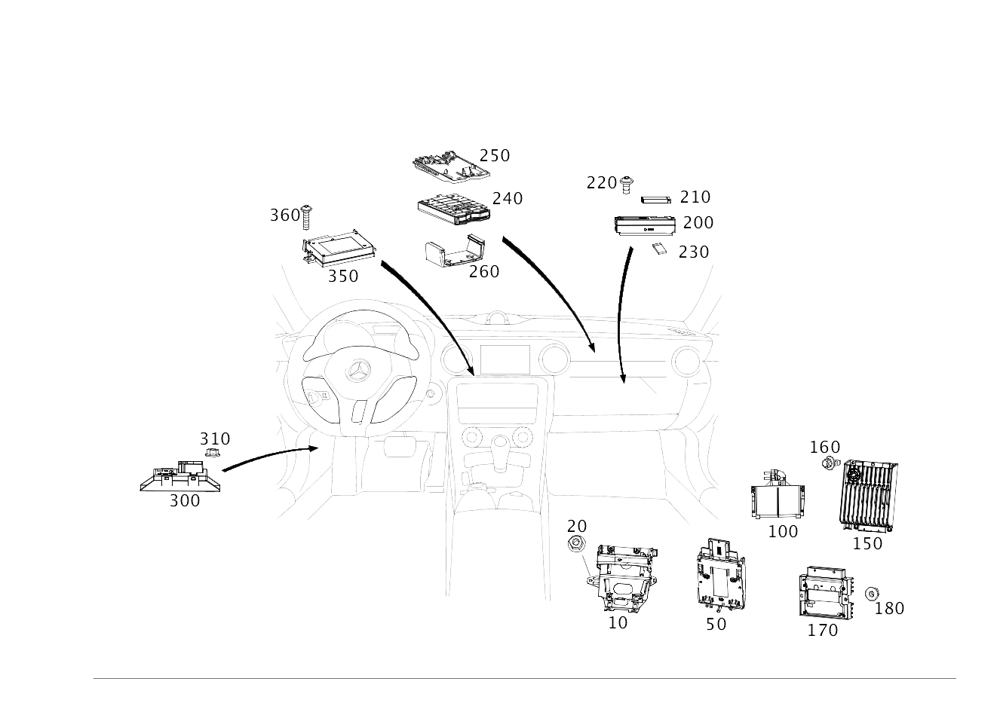

| № | Артикул | Название | Кол. | Примечание | Ограничение |
|---|---|---|---|---|---|
| 10 | A 171 545 37 40 | Держатель (HALTER) | 1 | Аудиоинтерфейс и блок управления коробки передач Рулевое управление: Влево | 802/803/804/805/806 |
| 10 | A 171 545 37 40 | Держатель (HALTER) | 1 | Аудиоинтерфейс и блок управления коробки передач Рулевое управление: Вправо | 802/803/804/805/806 |
| 10 | A 172 545 01 00 | Держатель (HALTER) | 1 | Аудиоинтерфейс и блок управления коробки передач | 807/808/809/800/801 |
| 20 | A 000 990 43 37 | Шестигранная гайка (SECHSKANTMUTTER) | 4 | КРЕПЛЕНИЕ КРОНШТЕЙНА; M6 | |
| 50 | A 172 810 00 11 | Контактная плата (KONTAKTPLATTE) | 1 | НАВИГАЦИЯ | 508/509 |
| 100 | A 000 900 13 04 | Блок управления (STEUERGERAET) | 1 | Система поддержания заданной скорости и безопасной дистанции Рулевое управление: Влево [672] ДЕТАЛЬ ПОСЛЕ УСТАН.ПРОВЕРИТЬ НА АКТУАЛЬНОСТЬ "ПРОШИВНОГО" ПО | 233 |
| 100 | A 000 900 13 04 | Блок управления (STEUERGERAET) | 1 | Система поддержания заданной скорости и безопасной дистанции Рулевое управление: Вправо [672] ДЕТАЛЬ ПОСЛЕ УСТАН.ПРОВЕРИТЬ НА АКТУАЛЬНОСТЬ "ПРОШИВНОГО" ПО | 233 |
| 150 | A 246 900 82 13 | Блок управления (STEUERGERAET) | 1 | Акустический усилитель N40/3 Рулевое управление: Влево [672] ДЕТАЛЬ ПОСЛЕ УСТАН.ПРОВЕРИТЬ НА АКТУАЛЬНОСТЬ "ПРОШИВНОГО" ПО [697] ДЕТАЛЬ ПОСТАВЛЯЕТСЯ ТОЛЬКО/ИЛИ ТАКЖЕ КАК ЗАП.ЧАСТЬ | (802/803/804/805/806)+810 |
| 150 | A 246 900 43 16 | Блок управления (STEUERGERAET) | 1 | Акустический усилитель N40/3 [672] ДЕТАЛЬ ПОСЛЕ УСТАН.ПРОВЕРИТЬ НА АКТУАЛЬНОСТЬ "ПРОШИВНОГО" ПО [697] ДЕТАЛЬ ПОСТАВЛЯЕТСЯ ТОЛЬКО/ИЛИ ТАКЖЕ КАК ЗАП.ЧАСТЬ | (802/803/804/805/806)+810+-R |
| 150 | A 246 900 82 13 | Блок управления (STEUERGERAET) | 1 | Акустический усилитель N40/3 Рулевое управление: Вправо [672] ДЕТАЛЬ ПОСЛЕ УСТАН.ПРОВЕРИТЬ НА АКТУАЛЬНОСТЬ "ПРОШИВНОГО" ПО [697] ДЕТАЛЬ ПОСТАВЛЯЕТСЯ ТОЛЬКО/ИЛИ ТАКЖЕ КАК ЗАП.ЧАСТЬ | (802/803/804/805/806)+810 |
| 150 | A 218 900 68 06 | Блок управления (STEUERGERAET) | 1 | Акустический усилитель N40/3 [672] ДЕТАЛЬ ПОСЛЕ УСТАН.ПРОВЕРИТЬ НА АКТУАЛЬНОСТЬ "ПРОШИВНОГО" ПО | (807/808/809)+810+-M016 |
| 150 | A 218 900 41 07 | Блок управления (STEUERGERAET) | 1 | Акустический усилитель N40/3 [672] ДЕТАЛЬ ПОСЛЕ УСТАН.ПРОВЕРИТЬ НА АКТУАЛЬНОСТЬ "ПРОШИВНОГО" ПО | (807/808/809)+810+-M016 |
| 150 | A 218 900 72 07 | Блок управления (STEUERGERAET) | 1 | Акустический усилитель N40/3 [672] ДЕТАЛЬ ПОСЛЕ УСТАН.ПРОВЕРИТЬ НА АКТУАЛЬНОСТЬ "ПРОШИВНОГО" ПО | (807/808/809)+810 |
| 150 | A 218 900 14 08 | Блок управления (STEUERGERAET) | 1 | Акустический усилитель N40/3 [672] ДЕТАЛЬ ПОСЛЕ УСТАН.ПРОВЕРИТЬ НА АКТУАЛЬНОСТЬ "ПРОШИВНОГО" ПО | (807/808/809/800/801)+810 |
| 150 | A 172 900 05 11 | Блок управления (STEUERGERAET) | 1 | Акустический усилитель N40/3 [672] ДЕТАЛЬ ПОСЛЕ УСТАН.ПРОВЕРИТЬ НА АКТУАЛЬНОСТЬ "ПРОШИВНОГО" ПО | (807/808/809)+810+(B63/(421+M274)) |
| 150 | A 172 900 39 13 | Блок управления (STEUERGERAET) | 1 | Акустический усилитель N40/3 [672] ДЕТАЛЬ ПОСЛЕ УСТАН.ПРОВЕРИТЬ НА АКТУАЛЬНОСТЬ "ПРОШИВНОГО" ПО [697] ДЕТАЛЬ ПОСТАВЛЯЕТСЯ ТОЛЬКО/ИЛИ ТАКЖЕ КАК ЗАП.ЧАСТЬ | (807/808/809/800/801)+810+B63 |
| 160 | N 910143 006000 | Винт с 6-гр. глвк (SECHSRUNDSCHRAUBE) | 4 | Крепление блока управления; M6X12 | 810 |
| 170 | A 292 900 31 01 | Блок управления (STEUERGERAET) | 1 | Акустический генератор [672] ДЕТАЛЬ ПОСЛЕ УСТАН.ПРОВЕРИТЬ НА АКТУАЛЬНОСТЬ "ПРОШИВНОГО" ПО | 807+B63+-M016 |
| 170 | A 172 900 86 12 | Блок управления (STEUERGERAET) | 1 | Акустический генератор [672] ДЕТАЛЬ ПОСЛЕ УСТАН.ПРОВЕРИТЬ НА АКТУАЛЬНОСТЬ "ПРОШИВНОГО" ПО | (807/808/809)+B63+-M016 |
| 170 | A 172 900 89 15 | Блок управления (STEUERGERAET) | 1 | Акустический генератор [672] ДЕТАЛЬ ПОСЛЕ УСТАН.ПРОВЕРИТЬ НА АКТУАЛЬНОСТЬ "ПРОШИВНОГО" ПО [697] ДЕТАЛЬ ПОСТАВЛЯЕТСЯ ТОЛЬКО/ИЛИ ТАКЖЕ КАК ЗАП.ЧАСТЬ | (807/808/809/800/801)+B63+-M016 |
| 180 | A 000 990 43 37 | Шестигранная гайка (SECHSKANTMUTTER) | 2 | Генератор звука к держателю; M6 | (807/808/809/800/801)+(B63/M276+M016) |
| 200 | A 166 900 87 12 | Блок управления (STEUERGERAET) | 1 | Навигационная система A2/30 [697] ДЕТАЛЬ ПОСТАВЛЯЕТСЯ ТОЛЬКО/ИЛИ ТАКЖЕ КАК ЗАП.ЧАСТЬ | 509+-(460/494/830/625/919L) |
| 200 | A 166 900 62 15 | Блок управления (STEUERGERAET) | 1 | Навигационная система A2/30 [672] ДЕТАЛЬ ПОСЛЕ УСТАН.ПРОВЕРИТЬ НА АКТУАЛЬНОСТЬ "ПРОШИВНОГО" ПО [697] ДЕТАЛЬ ПОСТАВЛЯЕТСЯ ТОЛЬКО/ИЛИ ТАКЖЕ КАК ЗАП.ЧАСТЬ | 509+-(460/494/830/625/919L) |
| 200 | A 166 900 89 12 | Блок управления (STEUERGERAET) | 1 | Навигационная система A2/30 | 509+(460/494)+-(625/919L) |
| 200 | A 166 900 63 15 | Блок управления (STEUERGERAET) | 1 | Навигационная система A2/30 [672] ДЕТАЛЬ ПОСЛЕ УСТАН.ПРОВЕРИТЬ НА АКТУАЛЬНОСТЬ "ПРОШИВНОГО" ПО [697] ДЕТАЛЬ ПОСТАВЛЯЕТСЯ ТОЛЬКО/ИЛИ ТАКЖЕ КАК ЗАП.ЧАСТЬ | 509+(460/494)+-(625/919L) |
| 200 | A 166 900 91 12 | Блок управления (STEUERGERAET) | 1 | Навигационная система A2/30 | (803/804)+509+830+-(625/919L) |
| 200 | A 166 900 64 15 | Блок управления (STEUERGERAET) | 1 | Навигационная система A2/30 [672] ДЕТАЛЬ ПОСЛЕ УСТАН.ПРОВЕРИТЬ НА АКТУАЛЬНОСТЬ "ПРОШИВНОГО" ПО | (803/804)+509+830+-(625/919L) |
| 200 | A 166 900 31 03 | Блок управления (STEUERGERAET) | 1 | Навигационная система A2/30 [672] ДЕТАЛЬ ПОСЛЕ УСТАН.ПРОВЕРИТЬ НА АКТУАЛЬНОСТЬ "ПРОШИВНОГО" ПО | 509+524L+-(625/919L) |
| 200 | A 166 900 66 15 | Блок управления (STEUERGERAET) | 1 | Навигационная система A2/30 [402] БОЛЬШЕ НЕ ПОСТАВЛЯЕТСЯ | 509+524L+-(625/919L) |
| 200 | A 166 900 87 12 | Блок управления (STEUERGERAET) | 1 | Навигационная система A2/30 [697] ДЕТАЛЬ ПОСТАВЛЯЕТСЯ ТОЛЬКО/ИЛИ ТАКЖЕ КАК ЗАП.ЧАСТЬ | 508+-(460/494/830/625/919L) |
| 200 | A 166 900 62 15 | Блок управления (STEUERGERAET) | 1 | Навигационная система A2/30 [672] ДЕТАЛЬ ПОСЛЕ УСТАН.ПРОВЕРИТЬ НА АКТУАЛЬНОСТЬ "ПРОШИВНОГО" ПО [697] ДЕТАЛЬ ПОСТАВЛЯЕТСЯ ТОЛЬКО/ИЛИ ТАКЖЕ КАК ЗАП.ЧАСТЬ | 508+-(460/494/830/625/919L) |
| 200 | A 166 900 81 07 | Блок управления | 1 | Навигационная система A2/30 | 508+(460/494)+-(830/625/919L) |
| 200 | A 166 900 96 08 | Блок управления (STEUERGERAET) | 1 | Навигационная система A2/30 | 508+(460/494)+-(830/625/919L) |
| 200 | A 166 900 89 08 | Блок управления (STEUERGERAET) | 1 | Навигационная система A2/30 [672] ДЕТАЛЬ ПОСЛЕ УСТАН.ПРОВЕРИТЬ НА АКТУАЛЬНОСТЬ "ПРОШИВНОГО" ПО | 508+(460/494)+-(830/625/919L) |
| 200 | A 166 900 89 12 | Блок управления (STEUERGERAET) | 1 | Навигационная система A2/30 | 508+(460/494)+-(830/625/919L) |
| 200 | A 166 900 63 15 | Блок управления (STEUERGERAET) | 1 | Навигационная система A2/30 [672] ДЕТАЛЬ ПОСЛЕ УСТАН.ПРОВЕРИТЬ НА АКТУАЛЬНОСТЬ "ПРОШИВНОГО" ПО [697] ДЕТАЛЬ ПОСТАВЛЯЕТСЯ ТОЛЬКО/ИЛИ ТАКЖЕ КАК ЗАП.ЧАСТЬ | 508+(460/494)+-(830/625/919L) |
| 200 | A 166 900 90 08 | Блок управления (STEUERGERAET) | 1 | Навигационная система A2/30 [672] ДЕТАЛЬ ПОСЛЕ УСТАН.ПРОВЕРИТЬ НА АКТУАЛЬНОСТЬ "ПРОШИВНОГО" ПО | 508+830+-(625/919L) |
| 200 | A 166 900 91 12 | Блок управления (STEUERGERAET) | 1 | Навигационная система A2/30 | 508+830+-(625/919L) |
| 200 | A 166 900 64 15 | Блок управления (STEUERGERAET) | 1 | Навигационная система A2/30 [672] ДЕТАЛЬ ПОСЛЕ УСТАН.ПРОВЕРИТЬ НА АКТУАЛЬНОСТЬ "ПРОШИВНОГО" ПО | 508+830+-(625/919L) |
| 200 | A 166 900 31 03 | Блок управления (STEUERGERAET) | 1 | Навигационная система A2/30 [672] ДЕТАЛЬ ПОСЛЕ УСТАН.ПРОВЕРИТЬ НА АКТУАЛЬНОСТЬ "ПРОШИВНОГО" ПО | 508+524L+-(625/919L) |
| 200 | A 166 900 66 15 | Блок управления (STEUERGERAET) | 1 | Навигационная система A2/30 [402] БОЛЬШЕ НЕ ПОСТАВЛЯЕТСЯ | 508+524L+-(625/919L) |
| 200 | A 166 900 93 12 | Блок управления (STEUERGERAET) | 1 | Навигационная система A2/30 | 509+(625/919L) |
| 200 | A 166 900 65 15 | Блок управления (STEUERGERAET) | 1 | Навигационная система A2/30 [672] ДЕТАЛЬ ПОСЛЕ УСТАН.ПРОВЕРИТЬ НА АКТУАЛЬНОСТЬ "ПРОШИВНОГО" ПО [697] ДЕТАЛЬ ПОСТАВЛЯЕТСЯ ТОЛЬКО/ИЛИ ТАКЖЕ КАК ЗАП.ЧАСТЬ [402] БОЛЬШЕ НЕ ПОСТАВЛЯЕТСЯ | 509+(625/919L) |
| 200 | A 166 900 93 12 | Блок управления (STEUERGERAET) | 1 | Навигационная система A2/30 | 508+(625/919L) |
| 200 | A 166 900 65 15 | Блок управления (STEUERGERAET) | 1 | Навигационная система A2/30 [672] ДЕТАЛЬ ПОСЛЕ УСТАН.ПРОВЕРИТЬ НА АКТУАЛЬНОСТЬ "ПРОШИВНОГО" ПО [697] ДЕТАЛЬ ПОСТАВЛЯЕТСЯ ТОЛЬКО/ИЛИ ТАКЖЕ КАК ЗАП.ЧАСТЬ [402] БОЛЬШЕ НЕ ПОСТАВЛЯЕТСЯ | 508+(625/919L) |
| 210 | A 172 982 00 25 | - Литий-ионная АКБ (BATTERIEPACK) | 1 | [697] ДЕТАЛЬ ПОСТАВЛЯЕТСЯ ТОЛЬКО/ИЛИ ТАКЖЕ КАК ЗАП.ЧАСТЬ | 509 |
| 220 | A 001 984 62 29 | Болт с головкой торкс (SECHSRUNDSCHRAUBE) | 2 | БЛОК УПРАВЛЕНИЯ К КРОНШТЕЙНУ; 5X10 | 508/509 |
| 240 | A 231 901 13 00 | Блок управл. | 1 | СИСТЕМА УЧЕТА И ВЗИМАНИЯ ДОРОЖНЫХ СБОРОВ A2/37 | 498 |
| 250 | A 231 827 00 14 | Держатель (HALTER) | 1 | Крепление блока управления | 498 |
| 260 | A 204 827 00 22 | Крышка блока управления (ABDECKUNG STEUERGERAET) | 1 | К держателю | 498 |
| 300 | A 166 900 33 09 | Блок управления (STEUERGERAET) | 1 | Система регулировки угла наклона фар N71/1 [672] ДЕТАЛЬ ПОСЛЕ УСТАН.ПРОВЕРИТЬ НА АКТУАЛЬНОСТЬ "ПРОШИВНОГО" ПО [697] ДЕТАЛЬ ПОСТАВЛЯЕТСЯ ТОЛЬКО/ИЛИ ТАКЖЕ КАК ЗАП.ЧАСТЬ | (803/804/805/806)+(615/621/622) |
| 310 | A 000 984 00 10 | Пластмассовая гайка (KUNSTSTOFFMUTTER) | 2 | Крепление блока управления | (804/805/806)+(615/621/622) |
| 350 | A 213 900 50 05 | Блок управления (STEUERGERAET) | 1 | Коммуникация [672] ДЕТАЛЬ ПОСЛЕ УСТАН.ПРОВЕРИТЬ НА АКТУАЛЬНОСТЬ "ПРОШИВНОГО" ПО | (802/803/804/805/806/807/808+-058)+360 |
| 350 | A 213 900 85 08 | Блок управления (STEUERGERAET) | 1 | Коммуникация [672] ДЕТАЛЬ ПОСЛЕ УСТАН.ПРОВЕРИТЬ НА АКТУАЛЬНОСТЬ "ПРОШИВНОГО" ПО | (802/803/804/805/806/807/808+-058)+360 |
| 350 | A 213 900 31 09 | Блок управления (STEUERGERAET) | 1 | Коммуникация [672] ДЕТАЛЬ ПОСЛЕ УСТАН.ПРОВЕРИТЬ НА АКТУАЛЬНОСТЬ "ПРОШИВНОГО" ПО | (802/803/804/805/806/807/808+-058)+360 |
| 350 | A 213 900 22 10 | Блок управления (STEUERGERAET) | 1 | Коммуникация [672] ДЕТАЛЬ ПОСЛЕ УСТАН.ПРОВЕРИТЬ НА АКТУАЛЬНОСТЬ "ПРОШИВНОГО" ПО | (802/803/804/805/806/807/808+-058)+360 |
| 350 | A 213 900 80 13 | Блок управления (STEUERGERAET) | 1 | Коммуникация [672] ДЕТАЛЬ ПОСЛЕ УСТАН.ПРОВЕРИТЬ НА АКТУАЛЬНОСТЬ "ПРОШИВНОГО" ПО | (802/803/804/805/806/807/808+-058)+360 |
| 350 | A 213 900 36 17 | Блок управления (STEUERGERAET) | 1 | Коммуникация [672] ДЕТАЛЬ ПОСЛЕ УСТАН.ПРОВЕРИТЬ НА АКТУАЛЬНОСТЬ "ПРОШИВНОГО" ПО | (802/803/804/805/806/807/808+-058)+360 |
| 350 | A 213 900 55 01 | Блок управления (STEUERGERAET) | 1 | Коммуникация [672] ДЕТАЛЬ ПОСЛЕ УСТАН.ПРОВЕРИТЬ НА АКТУАЛЬНОСТЬ "ПРОШИВНОГО" ПО | (802/803/804/805/806/807/808+-058)+362 |
| 350 | A 213 900 19 01 | Блок управления (STEUERGERAET) | 1 | Коммуникация [672] ДЕТАЛЬ ПОСЛЕ УСТАН.ПРОВЕРИТЬ НА АКТУАЛЬНОСТЬ "ПРОШИВНОГО" ПО | (802/803/804/805/806/807/808+-058)+362+(460/494) |
| 350 | A 213 900 88 08 | Блок управления | 1 | Коммуникация [672] ДЕТАЛЬ ПОСЛЕ УСТАН.ПРОВЕРИТЬ НА АКТУАЛЬНОСТЬ "ПРОШИВНОГО" ПО | (802/803/804/805/806/807/808+-058)+362+(460/494) |
| 350 | A 213 900 34 09 | Блок управления (STEUERGERAET) | 1 | Коммуникация [672] ДЕТАЛЬ ПОСЛЕ УСТАН.ПРОВЕРИТЬ НА АКТУАЛЬНОСТЬ "ПРОШИВНОГО" ПО | (802/803/804/805/806/807/808+-058)+362+(460/494) |
| 350 | A 213 900 25 10 | Блок управления (STEUERGERAET) | 1 | Коммуникация [672] ДЕТАЛЬ ПОСЛЕ УСТАН.ПРОВЕРИТЬ НА АКТУАЛЬНОСТЬ "ПРОШИВНОГО" ПО | (802/803/804/805/806/807/808+-058)+362+(460/494) |
| 350 | A 213 900 83 13 | Блок управления (STEUERGERAET) | 1 | Коммуникация [672] ДЕТАЛЬ ПОСЛЕ УСТАН.ПРОВЕРИТЬ НА АКТУАЛЬНОСТЬ "ПРОШИВНОГО" ПО | (802/803/804/805/806/807/808+-058)+362+(460/494) |
| 350 | A 213 900 47 15 | Блок управления (STEUERGERAET) | 1 | Коммуникация [672] ДЕТАЛЬ ПОСЛЕ УСТАН.ПРОВЕРИТЬ НА АКТУАЛЬНОСТЬ "ПРОШИВНОГО" ПО | (802/803/804/805/806/807/808+-058)+362+(460/494) |
| 350 | A 213 900 39 17 | Блок управления (STEUERGERAET) | 1 | Коммуникация [672] ДЕТАЛЬ ПОСЛЕ УСТАН.ПРОВЕРИТЬ НА АКТУАЛЬНОСТЬ "ПРОШИВНОГО" ПО | (802/803/804/805/806/807/808+-058)+362+(460/494) |
| 350 | A 213 900 14 01 | Блок управления | 1 | Коммуникация [672] ДЕТАЛЬ ПОСЛЕ УСТАН.ПРОВЕРИТЬ НА АКТУАЛЬНОСТЬ "ПРОШИВНОГО" ПО | (802/803/804/805/806/807/808+-058)+362+830 |
| 350 | A 213 900 87 08 | Блок управления (STEUERGERAET) | 1 | Коммуникация [672] ДЕТАЛЬ ПОСЛЕ УСТАН.ПРОВЕРИТЬ НА АКТУАЛЬНОСТЬ "ПРОШИВНОГО" ПО | (802/803/804/805/806/807/808+-058)+362+830 |
| 350 | A 213 900 33 09 | Блок управления (STEUERGERAET) | 1 | Коммуникация [672] ДЕТАЛЬ ПОСЛЕ УСТАН.ПРОВЕРИТЬ НА АКТУАЛЬНОСТЬ "ПРОШИВНОГО" ПО | (802/803/804/805/806/807/808+-058)+362+830 |
| 350 | A 213 900 24 10 | Блок управления (STEUERGERAET) | 1 | Коммуникация [672] ДЕТАЛЬ ПОСЛЕ УСТАН.ПРОВЕРИТЬ НА АКТУАЛЬНОСТЬ "ПРОШИВНОГО" ПО | (802/803/804/805/806/807/808+-058)+362+830 |
| 350 | A 213 900 82 13 | Блок управления (STEUERGERAET) | 1 | Коммуникация [672] ДЕТАЛЬ ПОСЛЕ УСТАН.ПРОВЕРИТЬ НА АКТУАЛЬНОСТЬ "ПРОШИВНОГО" ПО | (802/803/804/805/806/807/808+-058)+362+830 |
| 350 | A 213 900 46 15 | Блок управления (STEUERGERAET) | 1 | Коммуникация [672] ДЕТАЛЬ ПОСЛЕ УСТАН.ПРОВЕРИТЬ НА АКТУАЛЬНОСТЬ "ПРОШИВНОГО" ПО | (802/803/804/805/806/807/808+-058)+362+830 |
| 350 | A 213 900 38 17 | Блок управления (STEUERGERAET) | 1 | Коммуникация [672] ДЕТАЛЬ ПОСЛЕ УСТАН.ПРОВЕРИТЬ НА АКТУАЛЬНОСТЬ "ПРОШИВНОГО" ПО | (802/803/804/805/806/807/808+-058)+362+830 |
| 350 | A 222 900 53 15 | Блок управления (STEUERGERAET) | 1 | Коммуникация [672] ДЕТАЛЬ ПОСЛЕ УСТАН.ПРОВЕРИТЬ НА АКТУАЛЬНОСТЬ "ПРОШИВНОГО" ПО [697] ДЕТАЛЬ ПОСТАВЛЯЕТСЯ ТОЛЬКО/ИЛИ ТАКЖЕ КАК ЗАП.ЧАСТЬ | (808+058)+360 |
| 350 | A 222 900 71 21 | Блок управления (STEUERGERAET) | 1 | Коммуникация [672] ДЕТАЛЬ ПОСЛЕ УСТАН.ПРОВЕРИТЬ НА АКТУАЛЬНОСТЬ "ПРОШИВНОГО" ПО [697] ДЕТАЛЬ ПОСТАВЛЯЕТСЯ ТОЛЬКО/ИЛИ ТАКЖЕ КАК ЗАП.ЧАСТЬ | 808+058+(360/362+-830) |
| 350 | A 222 900 52 15 | Блок управления (STEUERGERAET) | 1 | Коммуникация [672] ДЕТАЛЬ ПОСЛЕ УСТАН.ПРОВЕРИТЬ НА АКТУАЛЬНОСТЬ "ПРОШИВНОГО" ПО [697] ДЕТАЛЬ ПОСТАВЛЯЕТСЯ ТОЛЬКО/ИЛИ ТАКЖЕ КАК ЗАП.ЧАСТЬ | (808+058)+362+830 |
| 350 | A 222 900 12 18 | Блок управления (STEUERGERAET) | 1 | Коммуникация [672] ДЕТАЛЬ ПОСЛЕ УСТАН.ПРОВЕРИТЬ НА АКТУАЛЬНОСТЬ "ПРОШИВНОГО" ПО | 809+-059+362+830 |
| 350 | A 222 900 47 19 | Блок управления (STEUERGERAET) | 1 | Коммуникация [672] ДЕТАЛЬ ПОСЛЕ УСТАН.ПРОВЕРИТЬ НА АКТУАЛЬНОСТЬ "ПРОШИВНОГО" ПО | 809+-059+362+830 |
| 350 | A 222 900 44 20 | Блок управления (STEUERGERAET) | 1 | Коммуникация [672] ДЕТАЛЬ ПОСЛЕ УСТАН.ПРОВЕРИТЬ НА АКТУАЛЬНОСТЬ "ПРОШИВНОГО" ПО | 809+-059+362+830 |
| 350 | A 222 900 22 18 | Блок управления (STEUERGERAET) | 1 | Коммуникация [672] ДЕТАЛЬ ПОСЛЕ УСТАН.ПРОВЕРИТЬ НА АКТУАЛЬНОСТЬ "ПРОШИВНОГО" ПО [697] ДЕТАЛЬ ПОСТАВЛЯЕТСЯ ТОЛЬКО/ИЛИ ТАКЖЕ КАК ЗАП.ЧАСТЬ | 809+-059+362 |
| 350 | A 222 900 45 19 | Блок управления (STEUERGERAET) | 1 | Коммуникация [672] ДЕТАЛЬ ПОСЛЕ УСТАН.ПРОВЕРИТЬ НА АКТУАЛЬНОСТЬ "ПРОШИВНОГО" ПО [697] ДЕТАЛЬ ПОСТАВЛЯЕТСЯ ТОЛЬКО/ИЛИ ТАКЖЕ КАК ЗАП.ЧАСТЬ | 809+-059+362 |
| 350 | A 222 900 42 20 | Блок управления (STEUERGERAET) | 1 | Коммуникация [672] ДЕТАЛЬ ПОСЛЕ УСТАН.ПРОВЕРИТЬ НА АКТУАЛЬНОСТЬ "ПРОШИВНОГО" ПО [697] ДЕТАЛЬ ПОСТАВЛЯЕТСЯ ТОЛЬКО/ИЛИ ТАКЖЕ КАК ЗАП.ЧАСТЬ | 809+-059+362 |
| 350 | A 222 900 69 14 | Блок управления (STEUERGERAET) | 1 | Коммуникация [672] ДЕТАЛЬ ПОСЛЕ УСТАН.ПРОВЕРИТЬ НА АКТУАЛЬНОСТЬ "ПРОШИВНОГО" ПО | 809+-059+362+(494/490) |
| 350 | A 222 900 64 15 | Блок управления (STEUERGERAET) | 1 | Коммуникация [672] ДЕТАЛЬ ПОСЛЕ УСТАН.ПРОВЕРИТЬ НА АКТУАЛЬНОСТЬ "ПРОШИВНОГО" ПО | 809+-059+362+(494/490) |
| 350 | A 222 900 48 19 | Блок управления (STEUERGERAET) | 1 | Коммуникация [672] ДЕТАЛЬ ПОСЛЕ УСТАН.ПРОВЕРИТЬ НА АКТУАЛЬНОСТЬ "ПРОШИВНОГО" ПО | 809+-059+362+(494/490) |
| 350 | A 222 900 45 20 | Блок управления (STEUERGERAET) | 1 | Коммуникация [672] ДЕТАЛЬ ПОСЛЕ УСТАН.ПРОВЕРИТЬ НА АКТУАЛЬНОСТЬ "ПРОШИВНОГО" ПО | 809+-059+362+(494/490) |
| 350 | A 222 900 13 19 | Блок управления (STEUERGERAET) | 1 | Коммуникация [672] ДЕТАЛЬ ПОСЛЕ УСТАН.ПРОВЕРИТЬ НА АКТУАЛЬНОСТЬ "ПРОШИВНОГО" ПО | 809+059+362+1B7/362+1B7+-(802/803/804/805/806/807/808/809) |
| 350 | A 222 900 42 20 | Блок управления (STEUERGERAET) | 1 | Коммуникация [672] ДЕТАЛЬ ПОСЛЕ УСТАН.ПРОВЕРИТЬ НА АКТУАЛЬНОСТЬ "ПРОШИВНОГО" ПО [697] ДЕТАЛЬ ПОСТАВЛЯЕТСЯ ТОЛЬКО/ИЛИ ТАКЖЕ КАК ЗАП.ЧАСТЬ | 809+059+362/362+-(802/803/804/805/806/807/808/809) |
| 350 | A 222 900 44 20 | Блок управления (STEUERGERAET) | 1 | Коммуникация [672] ДЕТАЛЬ ПОСЛЕ УСТАН.ПРОВЕРИТЬ НА АКТУАЛЬНОСТЬ "ПРОШИВНОГО" ПО | 809+059+362+830/362+830+-(802/803/804/805/806/807/808/809) |
| 350 | A 222 900 45 20 | Блок управления (STEUERGERAET) | 1 | Коммуникация [672] ДЕТАЛЬ ПОСЛЕ УСТАН.ПРОВЕРИТЬ НА АКТУАЛЬНОСТЬ "ПРОШИВНОГО" ПО | 809+059+362+(494/460)/362+(494/460)+-(802/803/804/805/806/807/808/809) |
| 350 | A 222 900 18 21 | Блок управления (STEUERGERAET) | 1 | Коммуникация [672] ДЕТАЛЬ ПОСЛЕ УСТАН.ПРОВЕРИТЬ НА АКТУАЛЬНОСТЬ "ПРОШИВНОГО" ПО [697] ДЕТАЛЬ ПОСТАВЛЯЕТСЯ ТОЛЬКО/ИЛИ ТАКЖЕ КАК ЗАП.ЧАСТЬ | 800+362 |
| 350 | A 222 900 00 21 | Блок управления (STEUERGERAET) | 1 | Коммуникация [672] ДЕТАЛЬ ПОСЛЕ УСТАН.ПРОВЕРИТЬ НА АКТУАЛЬНОСТЬ "ПРОШИВНОГО" ПО | 800+362+830 |
| 350 | A 222 900 01 21 | Блок управления (STEUERGERAET) | 1 | Коммуникация [672] ДЕТАЛЬ ПОСЛЕ УСТАН.ПРОВЕРИТЬ НА АКТУАЛЬНОСТЬ "ПРОШИВНОГО" ПО [697] ДЕТАЛЬ ПОСТАВЛЯЕТСЯ ТОЛЬКО/ИЛИ ТАКЖЕ КАК ЗАП.ЧАСТЬ | 800+362+(494/460/1B4) |
| 350 | A 222 900 05 21 | Блок управления (STEUERGERAET) | 1 | Коммуникация [672] ДЕТАЛЬ ПОСЛЕ УСТАН.ПРОВЕРИТЬ НА АКТУАЛЬНОСТЬ "ПРОШИВНОГО" ПО | 800+362+1B7 |
| 350 | A 222 900 71 21 | Блок управления (STEUERGERAET) | 1 | Коммуникация [672] ДЕТАЛЬ ПОСЛЕ УСТАН.ПРОВЕРИТЬ НА АКТУАЛЬНОСТЬ "ПРОШИВНОГО" ПО [697] ДЕТАЛЬ ПОСТАВЛЯЕТСЯ ТОЛЬКО/ИЛИ ТАКЖЕ КАК ЗАП.ЧАСТЬ | 801+362 |
| 350 | A 222 900 73 21 | Блок управления (STEUERGERAET) | 1 | Коммуникация [672] ДЕТАЛЬ ПОСЛЕ УСТАН.ПРОВЕРИТЬ НА АКТУАЛЬНОСТЬ "ПРОШИВНОГО" ПО [697] ДЕТАЛЬ ПОСТАВЛЯЕТСЯ ТОЛЬКО/ИЛИ ТАКЖЕ КАК ЗАП.ЧАСТЬ | 801+362+830 |
| 350 | A 222 900 90 21 | Блок управления (STEUERGERAET) | 1 | Коммуникация [672] ДЕТАЛЬ ПОСЛЕ УСТАН.ПРОВЕРИТЬ НА АКТУАЛЬНОСТЬ "ПРОШИВНОГО" ПО [697] ДЕТАЛЬ ПОСТАВЛЯЕТСЯ ТОЛЬКО/ИЛИ ТАКЖЕ КАК ЗАП.ЧАСТЬ | 801+362+(494/460/1B4) |
| 350 | A 222 900 78 21 | Блок управления (STEUERGERAET) | 1 | Коммуникация [672] ДЕТАЛЬ ПОСЛЕ УСТАН.ПРОВЕРИТЬ НА АКТУАЛЬНОСТЬ "ПРОШИВНОГО" ПО | 801+362+1B7 |
| 350 | A 238 900 12 05 | Блок управления (STEUERGERAET) | 1 | Коммуникация [672] ДЕТАЛЬ ПОСЛЕ УСТАН.ПРОВЕРИТЬ НА АКТУАЛЬНОСТЬ "ПРОШИВНОГО" ПО | 362+(494/460/1B4)+531+-(802/803/804/805/806/807/808/809/800) |
| 350 | A 213 900 95 31 | Блок управления (STEUERGERAET) | 1 | Коммуникация [672] ДЕТАЛЬ ПОСЛЕ УСТАН.ПРОВЕРИТЬ НА АКТУАЛЬНОСТЬ "ПРОШИВНОГО" ПО | 362+494+808+058 |
| 350 | A 213 900 68 29 | Блок управления (STEUERGERAET) | 1 | Коммуникация [672] ДЕТАЛЬ ПОСЛЕ УСТАН.ПРОВЕРИТЬ НА АКТУАЛЬНОСТЬ "ПРОШИВНОГО" ПО | 362+830 |
| 350 | A 222 900 12 18 | Блок управления (STEUERGERAET) | 1 | Коммуникация HERMES [672] ДЕТАЛЬ ПОСЛЕ УСТАН.ПРОВЕРИТЬ НА АКТУАЛЬНОСТЬ "ПРОШИВНОГО" ПО | 362+830 |
| 360 | A 001 984 65 29 | Болт с головкой торкс (SECHSRUNDSCHRAUBE) | 1 | КРЕПЛЕНИЕ БЛОКА УПРАВЛЕНИЯ; 5X20 | 360/362 |
| 400 | A 172 900 28 09 | Блок управления (STEUERGERAET) | 1 | УНИВЕРСАЛЬНЫЙ ИНТЕРФЕЙС КОММУНИКАЦИИ (UCI) [672] ДЕТАЛЬ ПОСЛЕ УСТАН.ПРОВЕРИТЬ НА АКТУАЛЬНОСТЬ "ПРОШИВНОГО" ПО [697] ДЕТАЛЬ ПОСТАВЛЯЕТСЯ ТОЛЬКО/ИЛИ ТАКЖЕ КАК ЗАП.ЧАСТЬ | (804/805/806)+518 |
| 420 | A 001 984 58 29 | Болт с головкой торкс (SECHSRUNDSCHRAUBE) | 1 | КРЕПЛЕНИЕ БЛОКА УПРАВЛЕНИЯ; 4X16 | (804/805/806)+518 |
| 450 | A 172 900 69 03 | Блок управления (STEUERGERAET) | 1 | ЛЕВОЕ СИДЕНЬЕ N32/1 Рулевое управление: Влево [672] ДЕТАЛЬ ПОСЛЕ УСТАН.ПРОВЕРИТЬ НА АКТУАЛЬНОСТЬ "ПРОШИВНОГО" ПО [697] ДЕТАЛЬ ПОСТАВЛЯЕТСЯ ТОЛЬКО/ИЛИ ТАКЖЕ КАК ЗАП.ЧАСТЬ | 275 |
| 450 | A 172 900 70 03 | Блок управления (STEUERGERAET) | 1 | ЛЕВОЕ СИДЕНЬЕ N32/1 Рулевое управление: Вправо [672] ДЕТАЛЬ ПОСЛЕ УСТАН.ПРОВЕРИТЬ НА АКТУАЛЬНОСТЬ "ПРОШИВНОГО" ПО [697] ДЕТАЛЬ ПОСТАВЛЯЕТСЯ ТОЛЬКО/ИЛИ ТАКЖЕ КАК ЗАП.ЧАСТЬ | 241 |
| 450 | A 172 900 70 03 | Блок управления (STEUERGERAET) | 1 | ПРАВОЕ СИДЕНЬЕ N32/2 Рулевое управление: Влево [672] ДЕТАЛЬ ПОСЛЕ УСТАН.ПРОВЕРИТЬ НА АКТУАЛЬНОСТЬ "ПРОШИВНОГО" ПО [697] ДЕТАЛЬ ПОСТАВЛЯЕТСЯ ТОЛЬКО/ИЛИ ТАКЖЕ КАК ЗАП.ЧАСТЬ | 242 |
| 450 | A 172 900 69 03 | Блок управления (STEUERGERAET) | 1 | ПРАВОЕ СИДЕНЬЕ N32/1 Рулевое управление: Вправо [672] ДЕТАЛЬ ПОСЛЕ УСТАН.ПРОВЕРИТЬ НА АКТУАЛЬНОСТЬ "ПРОШИВНОГО" ПО [697] ДЕТАЛЬ ПОСТАВЛЯЕТСЯ ТОЛЬКО/ИЛИ ТАКЖЕ КАК ЗАП.ЧАСТЬ | 275 |
| 500 | A 172 901 91 02 | Блок управл. (STEUERGERAET) | 1 | Аварийный натяжитель ремня, подушка безопасности и боковая подушка безопасности; ORC [673] БЛОК УПР. СЛЕДУЕТ "ПРОШИТЬ" СООТВЕТСТВУЮЩИМ ПРОГР.ОБЕСПЕЧ. | |
| 500 | A 172 901 57 04 | Блок управл. (STEUERGERAET) | 1 | Аварийный натяжитель ремня, подушка безопасности и боковая подушка безопасности; ORC [673] БЛОК УПР. СЛЕДУЕТ "ПРОШИТЬ" СООТВЕТСТВУЮЩИМ ПРОГР.ОБЕСПЕЧ. | |
| 500 | A 172 901 58 05 | Блок управл. (STEUERGERAET) | 1 | Аварийный натяжитель ремня, подушка безопасности и боковая подушка безопасности; OEC [673] БЛОК УПР. СЛЕДУЕТ "ПРОШИТЬ" СООТВЕТСТВУЮЩИМ ПРОГР.ОБЕСПЕЧ. [697] ДЕТАЛЬ ПОСТАВЛЯЕТСЯ ТОЛЬКО/ИЛИ ТАКЖЕ КАК ЗАП.ЧАСТЬ | |
| 500 | A 172 901 59 05 | Блок управл. (STEUERGERAET) | 1 | Аварийный натяжитель ремня, подушка безопасности и боковая подушка безопасности; ORC [673] БЛОК УПР. СЛЕДУЕТ "ПРОШИТЬ" СООТВЕТСТВУЮЩИМ ПРОГР.ОБЕСПЕЧ. [697] ДЕТАЛЬ ПОСТАВЛЯЕТСЯ ТОЛЬКО/ИЛИ ТАКЖЕ КАК ЗАП.ЧАСТЬ | (494/460)+-M152 |
| 510 | N 910105 006023 | Винт с 6-гранной головкой (SECHSKANTSCHRAUBE) | 4 | Крепление блока управления; M6X16 | |
| 550 | A 000 982 20 23 | Реле (RELAIS) | 1 | ДОПОЛНИТЕЛЬНАЯ АКБ, ЗА СИДЕНЬЕМ ВОДИТЕЛЯ | B03 |
| 560 | A 000 990 36 62 | Пластмассовая гайка (KUNSTSTOFFMUTTER) | 2 | КРЕПЛЕНИЕ РЕЛЕ | B03 |
| 600 | A 172 900 34 06 | Блок управления (STEUERGERAET) | 1 | УПРАВЛЕНИЕ ЖЁСТКИМ СКЛАДНЫМ ВЕРХОМ [672] ДЕТАЛЬ ПОСЛЕ УСТАН.ПРОВЕРИТЬ НА АКТУАЛЬНОСТЬ "ПРОШИВНОГО" ПО | 804/805 |
| 600 | A 172 900 70 08 | Блок управления (STEUERGERAET) | 1 | УПРАВЛЕНИЕ ЖЁСТКИМ СКЛАДНЫМ ВЕРХОМ [672] ДЕТАЛЬ ПОСЛЕ УСТАН.ПРОВЕРИТЬ НА АКТУАЛЬНОСТЬ "ПРОШИВНОГО" ПО [697] ДЕТАЛЬ ПОСТАВЛЯЕТСЯ ТОЛЬКО/ИЛИ ТАКЖЕ КАК ЗАП.ЧАСТЬ | 806 |
| 600 | A 172 900 84 12 | Блок управления (STEUERGERAET) | 1 | УПРАВЛЕНИЕ ЖЁСТКИМ СКЛАДНЫМ ВЕРХОМ [672] ДЕТАЛЬ ПОСЛЕ УСТАН.ПРОВЕРИТЬ НА АКТУАЛЬНОСТЬ "ПРОШИВНОГО" ПО [697] ДЕТАЛЬ ПОСТАВЛЯЕТСЯ ТОЛЬКО/ИЛИ ТАКЖЕ КАК ЗАП.ЧАСТЬ | 807/808/809/800/801 |
| 650 | A 172 900 04 02 | Блок управления (STEUERGERAET) | 1 | AIRSCARF N25/7 [672] ДЕТАЛЬ ПОСЛЕ УСТАН.ПРОВЕРИТЬ НА АКТУАЛЬНОСТЬ "ПРОШИВНОГО" ПО [697] ДЕТАЛЬ ПОСТАВЛЯЕТСЯ ТОЛЬКО/ИЛИ ТАКЖЕ КАК ЗАП.ЧАСТЬ | 403 |
| 660 | A 000 984 00 10 | Пластмассовая гайка (KUNSTSTOFFMUTTER) | 2 | КРЕПЛЕНИЕ БЛОКА УПРАВЛЕНИЯ | 403 |
| 940 | A 022 545 27 26 | Картер сцепления (KUPPLUNGSGEHAEUSE) | 2 | БЛОК УПРАВЛЕНИЯ ЖЁСТКОГО СКЛАДНОГО ВЕРХА; 4\-PIN MLK1.2 |
Позиций: 122 · подписано на схемах: 122 · колесо — плавный зум в курсор, перетаскивание — пан, двойной клик — зум, клик по артикулу — скопировать · наведите на строку или цифру на схеме — подсветка связки, клик — закрепить.